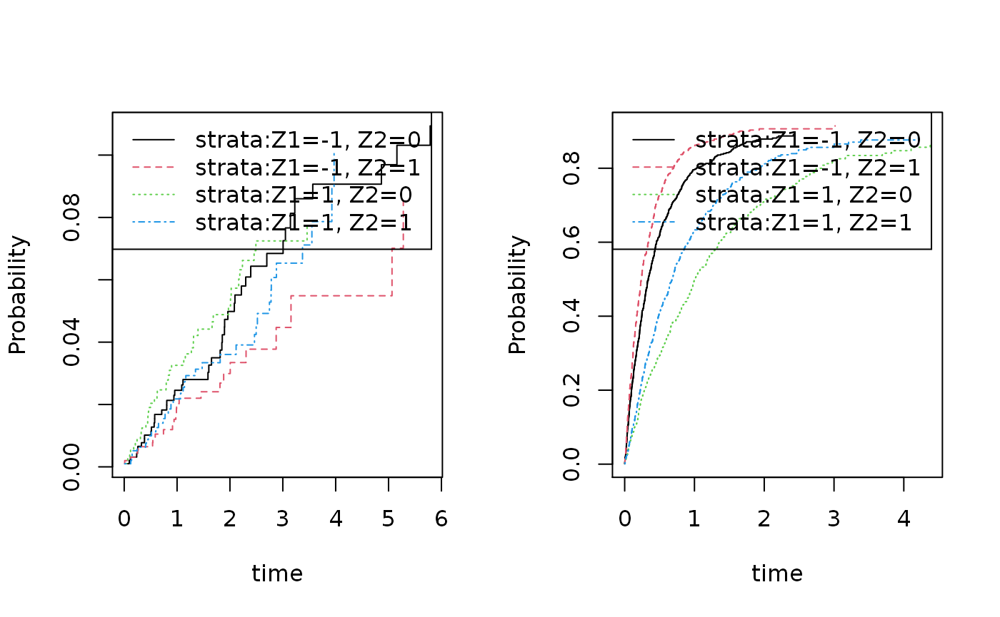
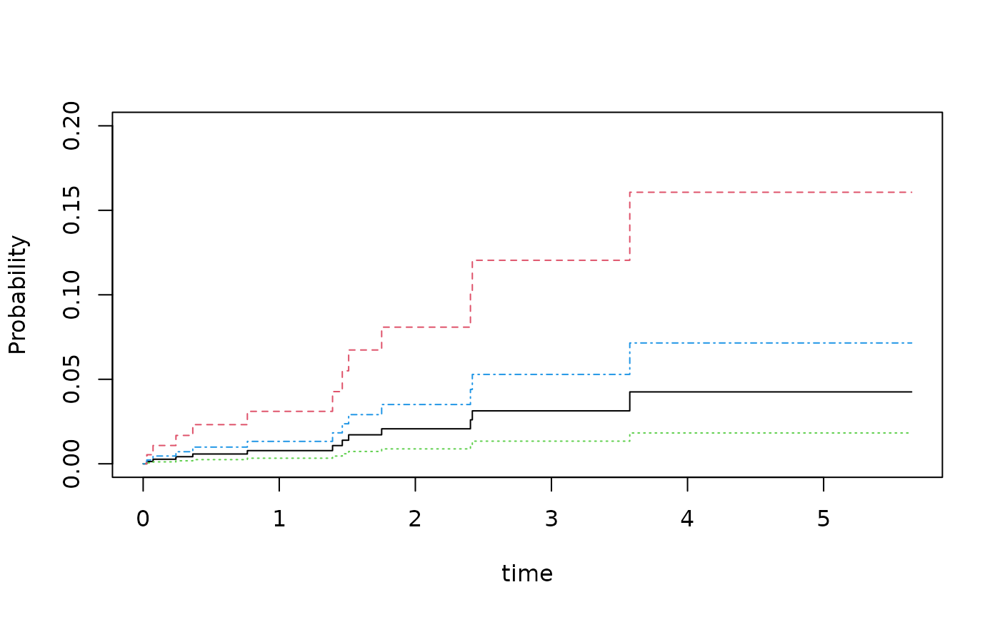
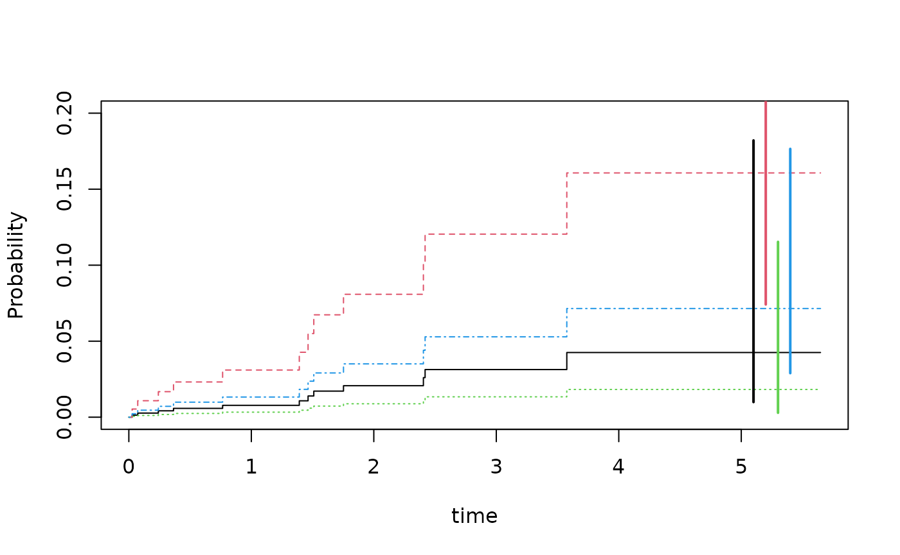

Cumulative Incidence Regression
Klaus Holst & Thomas Scheike
2026-05-21
Source:vignettes/cifreg.Rmd
cifreg.RmdThe cifreg function fits the Fine-Gray model and the
logit-link cumulative incidence model for the cause of interest in
competing risks settings. Computation is linear in data size, making it
suitable for large datasets. For the Fine-Gray model, predictions with
standard errors can be provided for specific time-points based on
influence functions for the baseline and the regression
coefficients.
Key features:
- the baseline can be stratified
- the censoring weights can be stratum-dependent
- predictions can be computed with standard errors (Fine-Gray only)
- computation time is linear in data size, including standard errors
- Fine-Gray only: influence functions of baseline and regression
coefficients are computed and available via
IC,iid, andiidBaseline - cluster-corrected standard errors are available via the
clustersargument
Fine-Gray model
Fine and Gray (1999) considered a cumulative incidence of the form \begin{align*} F_1(t,X) & = P(T \leq t, \epsilon=1) = 1 - \exp( - \Lambda_0(t) \exp(X^T \beta)). \end{align*}
In the case of independent right-censoring with the censoring distribution G_c(t,X) = P(C > t | S(X)) where S(X) is a set of strata defined from X, then an unbiased estimating equation is given by \begin{align*} U^{FG}_{n}(\beta) = \sum_{i=0}^{n} \int_0^{+\infty} \left( X_i- E_n(t,\beta) \right) w_i(t,X_i) dN_{1,i}(t) \text{ where } E_n(t,\beta)=\frac{\tilde S_1(t,\beta) }{\tilde S_0(t,\beta)}, \end{align*} with w_i(t,X_i) = \frac{G_c(t,X_i)}{G_c(T_i \wedge t,X_i)} I( C_i > T_i \wedge t ) ,\tilde S_k(t,\beta) = \sum_{j=1}^n X_j^k \exp(X_j^T\beta) Y_{1,j}(t) for k=0,1, and with \tilde Y_{1,i}(t) = Y_{1,i}(t) w_i(t,X_i) for i=1,...,n. w_i(t) needs to be replaced by an estimator of the censoring distribution; since it does not depend on X, we use \hat w_i(t) = \frac{\hat G_c(t,X_i)}{\hat G_c(T_i \wedge t,X_i)} I(C_i > T_i \wedge t) where \hat G_c is the Kaplan-Meier estimator of the censoring distribution.
First we simulate some competing risks data using some utility functions.
We simulate data with two causes based on the Fine-Gray model: \begin{align} F_1(t,X) & = P(T\leq t, \epsilon=1|X)=( 1 - exp(-\Lambda_1(t) \exp(X^T \beta_1))) \\ F_2(t,X) & = P(T\leq t, \epsilon=2|X)= ( 1 - exp(-\Lambda_2(t) \exp(X^T \beta_2))) \cdot (1 - F_1(\infty,X)) \end{align} where the baselines are given as \Lambda_j(t) = \rho_j (1- exp(-t/\nu_j)) for j=1,2, and the X being two independent binomials. Alternatively, one can also replace the FG-model with a logistic link \mbox{expit}( \Lambda_j(t) + \exp(X^T \beta_j)).
The advantage of the Fine-Gray model is that it is easy to fit, easy to obtain standard errors for, and quite flexible. On the downside, the coefficients must be interpreted on the \mbox{cloglog} scale. Specifically, \begin{align} \log(-\log( 1-F_1(t,X_1+1,X_2))) - \log(-\log( 1-F_1(t,X_1,X_2))) & = \beta_1, \end{align} so the effect of an increase in X_1 is \beta_1 and leads to 1-F_1(t,X) on the cloglog scale.
library(mets)
options(warn=-1)
set.seed(1000) # to control output in simulations for p-values below.
rho1 <- 0.2; rho2 <- 10
n <- 400
beta=c(0.0,-0.1,-0.5,0.3)
## beta1=c(0.0,-0.1); beta2=c(-0.5,0.3)
dats <- simul_cifs(n,rho1,rho2,beta,rc=0.5,rate=7)
dtable(dats,~status)
#>
#> status
#> 0 1 2
#> 127 12 261
dsort(dats) <- ~timeWe have a look at the non-parametric cumulative incidence curves
par(mfrow=c(1,2))
cifs1 <- cif(Event(time,status)~strata(Z1,Z2),dats,cause=1)
plot(cifs1)
cifs2 <- cif(Event(time,status)~strata(Z1,Z2),dats,cause=2)
plot(cifs2)
Now fitting the Fine-Gray model
fg <- cifregFG(Event(time,status)~Z1+Z2,data=dats,cause=1)
summary(fg)
#>
#> n events
#> 400 12
#>
#> 400 clusters
#> coefficients:
#> Estimate S.E. dU^-1/2 P-value
#> Z1 0.69686 0.38760 0.38882 0.0722
#> Z2 -0.85929 0.62453 0.61478 0.1689
#>
#> exp(coefficients):
#> Estimate 2.5% 97.5%
#> Z1 2.00744 0.93911 4.2911
#> Z2 0.42346 0.12451 1.4402
dd <- expand.grid(Z1=c(-1,1),Z2=0:1)
pfg <- predict(fg,dd)
plot(pfg,ylim=c(0,0.2))
and GOF based on cumulative residuals (Li et al. 2015)
gofFG(Event(time,status)~Z1+Z2,data=dats,cause=1)
#> Cumulative score process test for Proportionality:
#> Sup|U(t)| pval
#> Z1 3.011461 0.124
#> Z2 1.373513 0.227showing no problem with the proportionality of the model.
SE’s for the baseline and predictions of FG
The standard errors reported for the Fine-Gray estimator are based on the i.i.d. decomposition (influence functions) of the estimator. A similar decomposition exists for the baseline and is needed when standard errors of predictions are computed. These are somewhat harder to compute for all time-points simultaneously, but they can be obtained for specific time-points jointly with the i.i.d. decomposition of the regression coefficients, and then used to obtain standard errors for predictions.
We plot the predictions with confidence intervals for predictions at time point 5:
### predictions with CI based on iid decomposition of baseline and beta
fg <- cifregFG(Event(time,status)~Z1+Z2,data=dats,cause=1)
Biid <- iidBaseline(fg,time=5)
pfgse <- FGprediid(Biid,dd)
pfgse
#> pred se-log lower upper
#> [1,] 0.04253879 0.7418354 0.009938793 0.1820692
#> [2,] 0.16069100 0.3946377 0.074143886 0.3482633
#> [3,] 0.01823957 0.9410399 0.002884032 0.1153531
#> [4,] 0.07149610 0.4611261 0.028958169 0.1765199
plot(pfg,ylim=c(0,0.2))
for (i in 1:4) lines(c(5,5)+i/10,pfgse[i,3:4],col=i,lwd=2)
The i.i.d. decompositions are stored inside Biid; the
i.i.d. decomposition for \hat \beta -
\beta_0 is obtained via the iid() function.
Comparison
We compare with the cmprsk function, which gives exactly
the same results, but omit the code to avoid dependencies:
run <- 0
if (run==1) {
library(cmprsk)
mm <- model.matrix(~Z1+Z2,dats)[,-1]
cr <- with(dats,crr(time,status,mm))
cbind(cr$coef,diag(cr$var)^.5,fg$coef,fg$se.coef,cr$coef-fg$coef,diag(cr$var)^.5-fg$se.coef)
# [,1] [,2] [,3] [,4] [,5] [,6]
# Z1 0.6968603 0.3876029 0.6968603 0.3876029 -2.442491e-15 -2.553513e-15
# Z2 -0.8592892 0.6245258 -0.8592892 0.6245258 -2.997602e-15 1.776357e-15
}When comparing with the results from coxph based on
setting up the data using the finegray function, we get the
same estimates but note that the standard errors from coxph
are missing a term and therefore slightly different. When comparing to
the estimates from coxph without the additional censoring
term, we also get the same standard errors.
if (run==1) {
library(survival)
dats$id <- 1:nrow(dats)
dats$event <- factor(dats$status,0:2, labels=c("censor", "death", "other"))
fgdats <- finegray(Surv(time,event)~.,data=dats)
coxfg <- survival::coxph(Surv(fgstart, fgstop, fgstatus) ~ Z1+Z2 + cluster(id), weight=fgwt, data=fgdats)
fg0 <- cifreg(Event(time,status)~Z1+Z2,data=dats,cause=1,propodds=NULL)
cbind( coxfg$coef,fg0$coef, coxfg$coef-fg0$coef)
# [,1] [,2] [,3]
# Z1 0.6968603 0.6968603 -1.110223e-16
# Z2 -0.8592892 -0.8592892 -1.110223e-15
cbind(diag(coxfg$var)^.5,fg0$se.coef,diag(coxfg$var)^.5-fg0$se.coef)
# [,1] [,2] [,3]
# [1,] 0.3889129 0.3876029 0.0013099915
# [2,] 0.6241225 0.6245258 -0.0004033148
cbind(diag(coxfg$var)^.5,fg0$se1.coef,diag(coxfg$var)^.5-fg0$se1.coef)
# [,1] [,2] [,3]
# [1,] 0.3889129 0.3889129 -2.331468e-15
# [2,] 0.6241225 0.6241225 2.553513e-15
}We also remove all censorings from the data to compare the estimates
with those based on coxph, and observe that both the
estimates and the standard errors agree.
datsnc <- dtransform(dats,status=2,status==0)
dtable(datsnc,~status)
#>
#> status
#> 1 2
#> 12 388
datsnc$id <- 1:n
datsnc$entry <- 0
max <- max(dats$time)+1
## for cause 2 add risk interaval
datsnc2 <- subset(datsnc,status==2)
datsnc2 <- transform(datsnc2,entry=time)
datsnc2 <- transform(datsnc2,time=max)
datsncf <- rbind(datsnc,datsnc2)
#
cifnc <- cifreg(Event(time,status)~Z1+Z2,data=datsnc,cause=1,propodds=NULL)
cc <- phreg(Surv(entry,time,status==1)~Z1+Z2+cluster(id),datsncf)
cbind(cc$coef-cifnc$coef, diag(cc$var)^.5-diag(cifnc$var)^.5)
#> [,1] [,2]
#> Z1 1.221245e-15 -1.554312e-15
#> Z2 3.996803e-15 1.998401e-15
# [,1] [,2]
# Z1 1.332268e-15 -4.440892e-16
# Z2 4.218847e-15 2.220446e-16the cmprsk also gives the same
Strata dependent Censoring weights
We can improve efficiency and reduce bias by allowing the censoring weights to depend on the covariates.
fgcm <- cifregFG(Event(time,status)~Z1+Z2,data=dats,cause=1,cens.model=~strata(Z1,Z2))
summary(fgcm)
#>
#> n events
#> 400 12
#>
#> 400 clusters
#> coefficients:
#> Estimate S.E. dU^-1/2 P-value
#> Z1 0.54277 0.37188 0.39352 0.1444
#> Z2 -0.91846 0.61886 0.61447 0.1378
#>
#> exp(coefficients):
#> Estimate 2.5% 97.5%
#> Z1 1.72077 0.83019 3.5667
#> Z2 0.39913 0.11867 1.3424
summary(fg)
#>
#> n events
#> 400 12
#>
#> 400 clusters
#> coefficients:
#> Estimate S.E. dU^-1/2 P-value
#> Z1 0.69686 0.38760 0.38882 0.0722
#> Z2 -0.85929 0.62453 0.61478 0.1689
#>
#> exp(coefficients):
#> Estimate 2.5% 97.5%
#> Z1 2.00744 0.93911 4.2911
#> Z2 0.42346 0.12451 1.4402We note that the standard errors are slightly smaller for the more efficient estimator.
The influence functions of the Fine-Gray estimator are given by Fine and Gray (1999), \begin{align*} \phi_i^{FG} & = \int (X_i- e(t)) \tilde w_i(t) dM_{i1}(t,X_i) + \int \frac{q(t)}{\pi(t)} dM_{ic}(t), \\ & = \phi_i^{FG,1} + \phi_i^{FG,2}, \end{align*} where the first term is what would be achieved for a known censoring distribution, and the second term is due to the variability from the Kaplan-Meier estimator. Where M_{ic}(t) = N_{ic}(t) - \int_0^t Y_i(s) d\Lambda_c (s) with M_{ic} the standard censoring martingale.
The function q(t) that reflects that the censoring only affects the terms related to cause “2” jumps, can be written as \begin{align*} q(t) & = E( H(t,X) I(T \leq t, \epsilon=2) I(C > T)/G_c(T)) = E( H(t,X) F_2(t,X) ), \end{align*} with H(t,X) = \int_t^{\infty} (X- e(s)) G(s) d \Lambda_1(s,X) and since \pi(t)=E(Y(t))=S(t) G_c(t).
In the case where the censoring weights are stratified (based on X) we get the influence functions related to the censoring term with \begin{align*} q(t,X) & = E( H(t,X) I(T \leq t, \epsilon=2) I(T < C)/G_c(T,X) | X) = H(t,X) F_2(t,X), \end{align*} so that the influence function becomes \begin{align*} \int (X-e(t)) w(t) dM_1(t,X) + \int H(t,X) \frac{F_2(t,X)}{S(t,X)} \frac{1}{G_c(t,X)} dM_c(t,X). \end{align*} with H(t,X) = \int_t^{\infty} (X- e(s)) G(s,X) d \Lambda_1(s,X).
Logistic-link
rho1 <- 0.2; rho2 <- 10
n <- 400
beta=c(0.0,-0.1,-0.5,0.3)
dats <- simul_cifs(n,rho1,rho2,beta,rc=0.5,rate=7,type="logistic")
dtable(dats,~status)
#>
#> status
#> 0 1 2
#> 166 16 218
dsort(dats) <- ~timeThe model \begin{align*}
\mbox{logit}(F_1(t,X)) & = \alpha(t) + X^T \beta
\end{align*} leads to an odds-ratio interpretation of F_1 and can be fitted easily; however, the
standard errors are harder to compute and only approximate (assuming
that the censoring weights are known), though this typically introduces
only a small error. In the timereg package the model can be
fitted using different estimators that are more efficient but
considerably slower.
Fitting the model and getting OR’s
or <- cifreg(Event(time,status)~Z1+Z2,data=dats,cause=1)
summary(or)
#>
#> n events
#> 400 16
#>
#> 400 clusters
#> coefficients:
#> Estimate S.E. dU^-1/2 P-value
#> Z1 0.10017 0.25562 0.25215 0.6952
#> Z2 0.21763 0.50407 0.50346 0.6659
#>
#> exp(coefficients):
#> Estimate 2.5% 97.5%
#> Z1 1.10535 0.66976 1.8242
#> Z2 1.24313 0.46287 3.3387Administrative Censoring
In the case with administrative censoring we can give the risk-set defined by the administrative censoring times for the Fine-Gray or logistic link cumulative incidence regression models.
- when an administrative censoring time is given, the risk-set is extended for all subjects experiencing the alternative event
- if there are also additional random censorings, these can be
adjusted for via IPCW weights, specified using
cens.code - alternative causes are found by considering
cause,cens.code, and the total number of values for the status variable; it can therefore be useful to also specify the otherdeath.code(s)
library(mets)
rho1 <- 0.3; rho2 <- 5.9
set.seed(100)
n <- 100
beta=c(0.3,-0.3,-0.5,0.3)
rc <- 0.5
###
dats <- mets:::simul_cifsRA(n,rho1,rho2,beta,bin=1,rc=rc,rate=c(3,7))
dats$status07 <- dats$status
dats$status07[dats$status %in% c(0,7)] <- 0
tt <- seq(0,6,by=0.1)
base1 <- rho1*(1-exp(-tt/3))
dtable(dats,~status+statusA,level=1)
#>
#> status
#> 0 1 2 7
#> 17 16 58 9
#>
#> statusA
#> 1 2 7
#> 21 64 15
## only admin censoring
ccA <- cifregFG(Event(timeA,statusA)~Z1+Z2,dats,
adm.cens.time=dats$censorA,death.code=2)
estimate(ccA)
#> Estimate Std.Err 2.5% 97.5% P-value
#> Z1 0.08665 0.2116 -0.3280 0.5014 0.6821
#> Z2 0.40535 0.4276 -0.4328 1.2435 0.3432
## admin and random censoring via IPCW for C=min(C_A,C_R)
ccAR_ipcw1 <- cifregFG(Event(time,status)~Z1+Z2,dats,cens.code=c(0,7))
estimate(ccAR_ipcw1)
#> Estimate Std.Err 2.5% 97.5% P-value
#> Z1 0.02131 0.2376 -0.4444 0.487 0.9285
#> Z2 0.32213 0.4844 -0.6272 1.271 0.5060
## admin and random censoring via IPCW for C_R
ccAR_ipcw2 <- cifregFG(Event(time,status)~Z1+Z2,dats,cens.code=0,
adm.cens.time=dats$censorA,no.codes=7)
estimate(ccAR_ipcw2)
#> Estimate Std.Err 2.5% 97.5% P-value
#> Z1 0.03723 0.2381 -0.4295 0.504 0.8758
#> Z2 0.34502 0.4859 -0.6074 1.297 0.4777When there is only administrative censoring, the Fine-Gray model can
similarly be estimated using the modified risk-set and the
phreg/coxph function (equivalent to
ccA above).
dats$entry <- 0
dats$id <- 1:n
datA <- dats
datA2 <- subset(datA,statusA==2)
datA2$entry <- datA2$timeA
datA2$timeA <- datA2$censorA
datA2$statusA <- 0
datA <- rbind(datA,datA2)
ddA <- phreg(Event(entry,timeA,statusA==1)~Z1+Z2+cluster(id),datA)
estimate(ddA)
#> Estimate Std.Err 2.5% 97.5% P-value
#> Z1 0.08665 0.2116 -0.3280 0.5014 0.6821
#> Z2 0.40535 0.4276 -0.4328 1.2435 0.3432
## also checking the cumulative baseline
###plotl(tt,base1)
###plot(ccA,add=TRUE,col=3)
###plot(ddA,col=2,add=TRUE)SessionInfo
sessionInfo()
#> R version 4.6.0 (2026-04-24)
#> Platform: x86_64-pc-linux-gnu
#> Running under: Ubuntu 24.04.4 LTS
#>
#> Matrix products: default
#> BLAS: /usr/lib/x86_64-linux-gnu/openblas-pthread/libblas.so.3
#> LAPACK: /usr/lib/x86_64-linux-gnu/openblas-pthread/libopenblasp-r0.3.26.so; LAPACK version 3.12.0
#>
#> locale:
#> [1] LC_CTYPE=C.UTF-8 LC_NUMERIC=C LC_TIME=C.UTF-8
#> [4] LC_COLLATE=C.UTF-8 LC_MONETARY=C.UTF-8 LC_MESSAGES=C.UTF-8
#> [7] LC_PAPER=C.UTF-8 LC_NAME=C LC_ADDRESS=C
#> [10] LC_TELEPHONE=C LC_MEASUREMENT=C.UTF-8 LC_IDENTIFICATION=C
#>
#> time zone: UTC
#> tzcode source: system (glibc)
#>
#> attached base packages:
#> [1] stats graphics grDevices utils datasets methods base
#>
#> other attached packages:
#> [1] mets_1.3.10
#>
#> loaded via a namespace (and not attached):
#> [1] cli_3.6.6 knitr_1.51 rlang_1.2.0
#> [4] xfun_0.57 textshaping_1.0.5 jsonlite_2.0.0
#> [7] listenv_0.10.1 future.apply_1.20.2 lava_1.9.1
#> [10] htmltools_0.5.9 ragg_1.5.2 sass_0.4.10
#> [13] rmarkdown_2.31 grid_4.6.0 evaluate_1.0.5
#> [16] jquerylib_0.1.4 fastmap_1.2.0 numDeriv_2016.8-1.1
#> [19] yaml_2.3.12 mvtnorm_1.3-7 lifecycle_1.0.5
#> [22] timereg_2.0.7 compiler_4.6.0 codetools_0.2-20
#> [25] fs_2.1.0 htmlwidgets_1.6.4 Rcpp_1.1.1-1.1
#> [28] future_1.70.0 lattice_0.22-9 systemfonts_1.3.2
#> [31] digest_0.6.39 R6_2.6.1 parallelly_1.47.0
#> [34] parallel_4.6.0 splines_4.6.0 Matrix_1.7-5
#> [37] bslib_0.11.0 tools_4.6.0 RcppArmadillo_15.2.6-1
#> [40] globals_0.19.1 survival_3.8-6 pkgdown_2.2.0
#> [43] cachem_1.1.0 desc_1.4.3